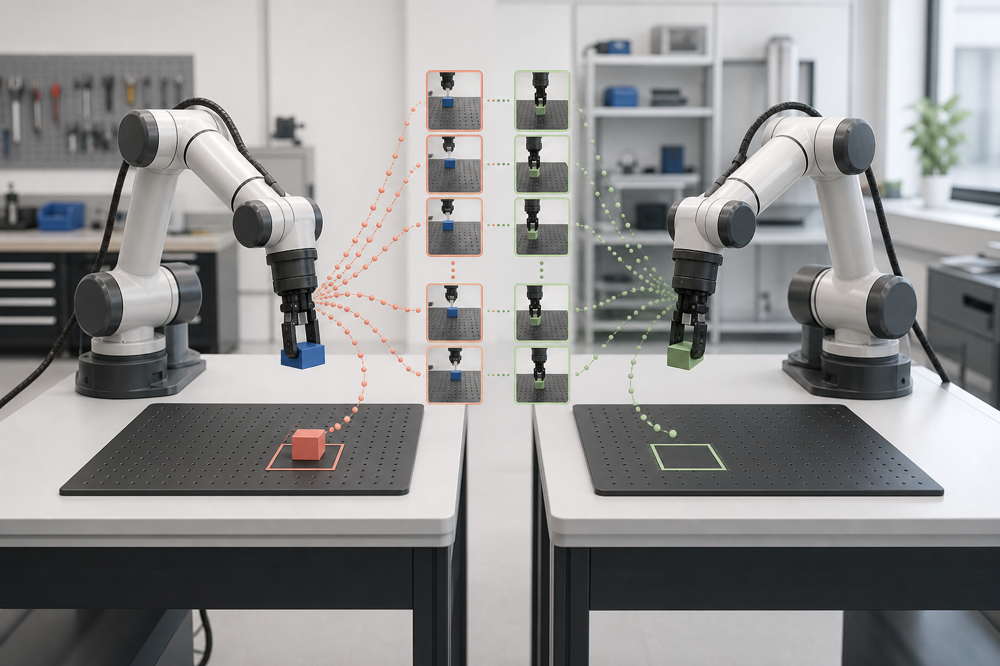

Back to Imitation Learning Notes

1. Why Imitation Learning?
Reinforcement learning asks an agent to discover useful behavior through interaction and reward. In robotics, that exploration can be slow, expensive, and unsafe. A physical robot may need thousands of trials, while a poorly specified reward can produce behavior that satisfies the objective without solving the intended task.
Imitation learning takes a different starting point: an expert demonstrates the task, and the robot learns a policy from those demonstrations. Instead of specifying every rule or designing a detailed reward function, we provide examples of what successful behavior looks like.
This is especially attractive for tasks that are easy for a person to demonstrate but difficult to describe precisely, such as:
- grasping and manipulating deformable objects
- driving through complex traffic interactions
- coordinating two robot arms
- performing contact-rich assembly
- navigating in human environments
2. Problem Formulation
Suppose an expert follows an unknown policy $\pi_E$. We collect a demonstration dataset containing trajectories of observations and actions:
The learner constructs a policy $\pi_\theta(a \mid o)$ that should reproduce the expert's behavior. Depending on the method, the learner may imitate individual actions, match full trajectory distributions, or infer the objective that explains the demonstrations.
| Component | Examples in Robotics |
|---|---|
| Observation | Camera images, joint positions, force signals, task goals |
| Action | Joint commands, end-effector poses, gripper commands |
| Demonstration | Teleoperation, kinesthetic teaching, human video |
| Policy | Neural network mapping observations to actions or action sequences |
3. Behavior Cloning
Behavior cloning (BC) is the simplest and most widely used form of imitation learning. It treats imitation as supervised learning: observations are inputs, and expert actions are labels.
For continuous control, the policy can be trained by minimizing a regression loss:
For discrete actions, cross-entropy is a natural alternative. The training loop is familiar:
for observations, expert_actions in dataloader:
predicted_actions = policy(observations)
loss = action_loss(predicted_actions, expert_actions)
optimizer.zero_grad()
loss.backward()
optimizer.step()Behavior cloning is appealing because it does not need a reward function or environment interaction during training. With diverse, high-quality data, it can learn surprisingly complex visuomotor skills.
3.1 The Multimodal Action Problem
A single observation may admit several correct actions. A robot can pass an obstacle on either side, or grasp an object from several valid directions. A policy trained with mean-squared error may average these modes and produce an action that belongs to none of them.
Modern policies address this with expressive conditional distributions, including mixture models, latent-variable models, autoregressive transformers, and diffusion models. The goal is to represent multiple coherent action sequences instead of collapsing them into one average prediction.
4. Distribution Shift and Compounding Error
The central weakness of behavior cloning is that training and deployment do not produce the same observation distribution. Training examples come from states visited by the expert. During deployment, the learner visits states generated by its own actions.
A small prediction error can move the robot into an unfamiliar state. Because recovery behavior may be absent from the dataset, the next prediction becomes less reliable, causing errors to accumulate over time. This is often called covariate shift or compounding error.
Good one-step prediction accuracy does not guarantee good closed-loop behavior.
This distinction explains why validation loss alone is not enough. A policy must be evaluated by rolling it out in the environment and measuring whether it completes the task robustly.
5. DAgger: Learning From the Learner's States
Dataset Aggregation (DAgger) addresses distribution shift through an interactive loop. The learner executes its current policy, an expert labels the states that the learner actually visits, and those new examples are added to the training set.
- Train an initial policy on expert demonstrations.
- Roll out the current policy in the environment.
- Ask the expert for the correct action at visited states.
- Aggregate the new labels with the existing dataset.
- Retrain the policy and repeat.
The key idea is simple: train on the distribution induced by the learner, including mistakes and recovery states. This makes the policy more robust, but it requires repeated expert access and careful safety controls during data collection.
6. Learning Objectives, Not Only Actions
Behavior cloning asks, "What action would the expert take here?" Another family of methods asks, "What objective would make the demonstrated behavior rational?"
6.1 Inverse Reinforcement Learning
Inverse reinforcement learning (IRL) infers a reward or cost function from demonstrations. A policy can then be optimized under that recovered objective. This can generalize beyond the exact demonstrated trajectories, but it introduces an inner reinforcement-learning problem and the inferred reward is generally not unique.
6.2 Adversarial Imitation Learning
Generative Adversarial Imitation Learning (GAIL) avoids explicitly recovering a reward function. A discriminator learns to distinguish expert behavior from learner behavior, while the policy learns to make its state-action occupancy resemble the expert's. This matches behavior at the distribution level rather than only matching isolated actions.
7. Collecting Robot Demonstrations
In practice, data quality often matters as much as the learning algorithm. Demonstrations must expose the relevant states, actions, and task variation while remaining synchronized and reproducible.
| Collection Method | Strength | Limitation |
|---|---|---|
| Kinesthetic teaching | Direct and intuitive for compliant arms | Limited to robots that can be moved safely |
| Teleoperation | Works for complex and remote tasks | Operator interface can introduce delay and bias |
| Motion capture | Captures natural human movement | Requires retargeting to robot morphology |
| Human video | Large and scalable data source | Actions and robot-compatible state may be missing |
A useful dataset should include successful task execution, meaningful variation in objects and initial conditions, and recovery behavior. Recording failures can also be valuable when the training method can distinguish preferred from undesirable behavior.
8. Modern Sequence Policies
Many manipulation tasks require temporal consistency. Predicting one action at a time can cause jitter and make long-horizon coordination difficult. Recent approaches therefore predict short action sequences or chunks.
- Action Chunking with Transformers (ACT) predicts coherent action segments and uses temporal ensembling for precise bimanual manipulation.
- Diffusion Policy models the conditional action distribution as a denoising process, making it well suited to multimodal, high-dimensional actions.
- Goal-conditioned policies combine demonstrations with an explicit task or goal representation so one model can perform multiple behaviors.
ACT: Learning Fine-Grained Bimanual Manipulation with Low-Cost Hardware
Diffusion Policy: Visuomotor Policy Learning via Action Diffusion
9. A Practical Evaluation Checklist
Offline prediction metrics are useful for debugging, but the main evaluation should reflect closed-loop task performance.
- Task success: Does the policy complete the full task, not just individual motions?
- Robustness: Does it tolerate changes in object pose, lighting, initial state, and sensor noise?
- Recovery: Can it return to a useful state after a small mistake?
- Safety: Are collisions, excessive forces, and constraint violations tracked explicitly?
- Generalization: Are evaluation objects, scenes, and goals separated from the training set?
- Latency: Can observations and actions be processed at the control frequency required by the robot?
Evaluation should report results across multiple initial conditions and random seeds. Video is valuable evidence, but aggregate success rates and clearly defined failure categories make comparisons more informative.
10. Choosing a Starting Point
A practical progression for a new robotics project is:
- Define observations, actions, control frequency, and success criteria.
- Collect a small, consistent demonstration dataset.
- Train a behavior-cloning baseline and evaluate it in closed loop.
- Inspect failures to identify missing state coverage or multimodal actions.
- Add recovery demonstrations or interactive data collection when distribution shift dominates.
- Move to sequence or generative policies only when the baseline reveals a clear need.
Imitation learning is not simply supervised learning applied to robots. It is a sequential decision-making problem in which the policy changes the data it will encounter next. The most reliable systems combine good demonstrations, expressive policies, closed-loop evaluation, and deliberate coverage of failure and recovery states.